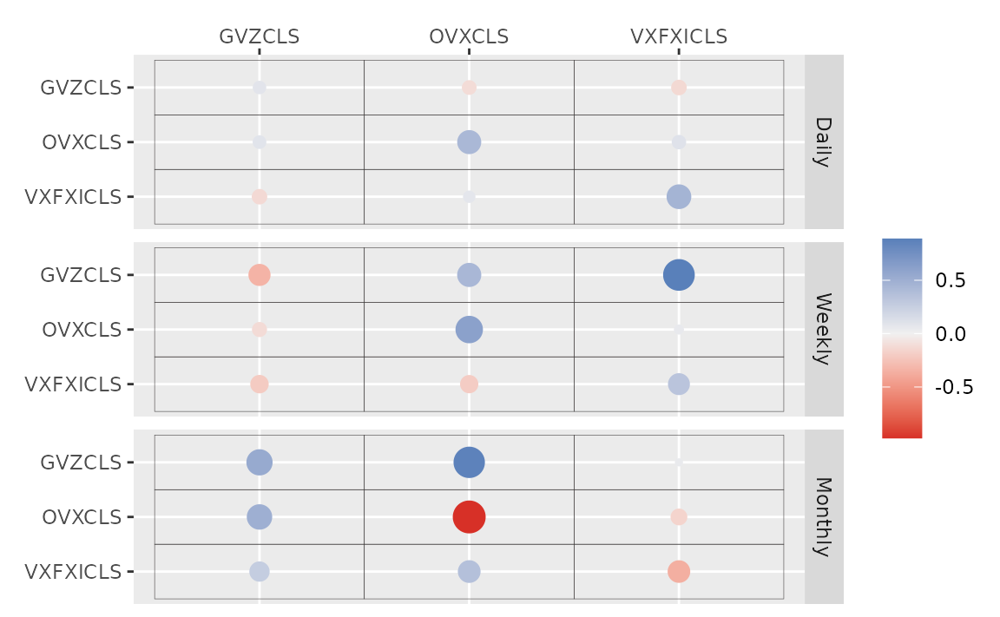
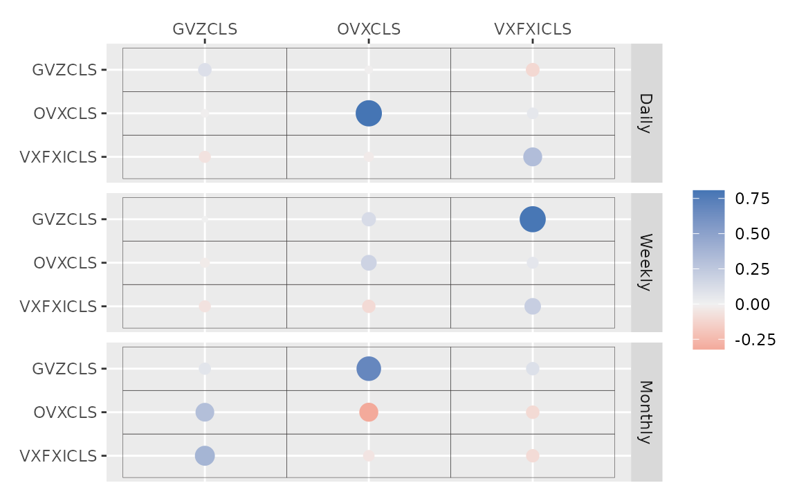

etf <- etf_vix[1:55, 1:3]
# Split-------------------------------
h <- 5
etf_eval <- divide_ts(etf, h)
etf_train <- etf_eval$train
etf_test <- etf_eval$testBayesian VAR and VHAR
var_bayes() and vhar_bayes() fit BVAR and
BVHAR each with various priors.
-
y: Multivariate time series data. It should be data frame or matrix, which means that every column is numeric. Each column indicates variable, i.e. it sould be wide format. -
porhar: VAR lag, or order of VHAR -
num_chains: Number of chains- If OpenMP is enabled, parallel loop will be run.
-
num_iter: Total number of iterations -
num_burn: Number of burn-in -
thinning: Thinning -
bayes_spec: Output ofset_ssvs()- Minneosta prior
- BVAR:
set_bvar() - BVHAR:
set_bvhar()andset_weight_bvhar() - Can induce prior on
using
lambda = set_lambda()
- BVAR:
- SSVS prior:
set_ssvs() - Horseshoe prior:
set_horseshoe() - NG prior:
set_ng() - DL prior:
set_dl()
- Minneosta prior
-
cov_spec: Covariance prior specification. Useset_ldlt()for homoskedastic model. -
include_mean = TRUE: By default, you include the constant term in the model. -
minnesota = c("no", "short", "longrun"): Minnesota-type shrinkage. -
verbose = FALSE: Progress bar -
num_thread: Number of thread for OpenMP- Used in parallel multi-chain loop
- This option is valid only when OpenMP in user’s machine.
Stochastic Search Variable Selection (SSVS) Prior
(fit_ssvs <- vhar_bayes(etf_train, num_chains = 1, num_iter = 20, bayes_spec = set_ssvs(), cov_spec = set_ldlt(), include_mean = FALSE, minnesota = "longrun"))
#> Call:
#> vhar_bayes(y = etf_train, num_chains = 1, num_iter = 20, bayes_spec = set_ssvs(),
#> cov_spec = set_ldlt(), include_mean = FALSE, minnesota = "longrun")
#>
#> BVHAR with SSVS prior
#> Fitted by Gibbs sampling
#> Total number of iteration: 20
#> Number of burn-in: 10
#> ====================================================
#>
#> Parameter Record:
#> # A draws_df: 10 iterations, 1 chains, and 90 variables
#> phi[1] phi[2] phi[3] phi[4] phi[5] phi[6] phi[7] phi[8]
#> 1 0.302337 0.4543 -0.0375 -0.49548 -0.73538 -0.3439 0.162 0.567
#> 2 0.104371 0.1934 -0.2732 -0.00798 -0.19941 0.0301 0.213 0.492
#> 3 0.373726 0.8019 -0.3833 -0.64653 -1.14892 0.0196 -0.296 1.299
#> 4 0.096895 0.0861 -0.2299 -0.96209 -0.36561 -0.1900 0.754 0.902
#> 5 -0.000544 0.3906 -0.2333 0.03740 -0.38600 0.0149 0.450 0.855
#> 6 0.013843 0.2744 -0.2938 0.10003 -0.17177 -0.0979 0.702 0.922
#> 7 -0.243176 0.0134 0.0297 -0.46767 -0.38944 -0.2737 0.715 0.988
#> 8 0.119136 0.2333 -0.1710 -1.07673 -0.27910 -0.2497 1.797 0.858
#> 9 -0.123032 0.0541 -0.3807 -0.52832 0.03043 0.1313 0.684 1.394
#> 10 -0.007328 0.0410 0.0137 -0.98017 0.00218 -0.1690 1.298 1.312
#> # ... with 82 more variables
#> # ... hidden reserved variables {'.chain', '.iteration', '.draw'}autoplot() for the fit (bvharsp object)
provides coefficients heatmap. There is type argument, and
the default type = "coef" draws the heatmap.
autoplot(fit_ssvs)
Horseshoe Prior
bayes_spec is the initial specification by
set_horseshoe(). Others are the same.
(fit_hs <- vhar_bayes(etf_train, num_chains = 2, num_iter = 20, bayes_spec = set_horseshoe(), cov_spec = set_ldlt(), include_mean = FALSE, minnesota = "longrun"))
#> Call:
#> vhar_bayes(y = etf_train, num_chains = 2, num_iter = 20, bayes_spec = set_horseshoe(),
#> cov_spec = set_ldlt(), include_mean = FALSE, minnesota = "longrun")
#>
#> BVHAR with Horseshoe prior
#> Fitted by Gibbs sampling
#> Number of chains: 2
#> Total number of iteration: 20
#> Number of burn-in: 10
#> ====================================================
#>
#> Parameter Record:
#> # A draws_df: 10 iterations, 2 chains, and 124 variables
#> phi[1] phi[2] phi[3] phi[4] phi[5] phi[6] phi[7] phi[8]
#> 1 0.1855 -0.0384 0.0917 0.00753 0.1832 1.044 0.174144 -0.1117
#> 2 0.1331 -0.0762 0.0435 -0.00436 0.2640 0.817 0.229029 -0.0391
#> 3 0.1611 -0.1832 0.0624 -0.01279 -0.1236 0.688 0.195939 -0.0598
#> 4 0.2314 -0.0794 0.0186 -0.08791 -0.0304 1.010 -0.123500 -0.0472
#> 5 0.0946 -0.0219 0.0344 0.12698 0.0809 1.038 -0.002482 0.0370
#> 6 0.1352 -0.0795 0.0804 -0.07565 0.2018 0.910 0.001557 -0.0110
#> 7 0.0155 -0.1789 -0.0395 0.16233 0.5132 0.930 -0.000694 -0.0216
#> 8 -0.0507 -0.1769 0.0890 -0.03753 0.9218 0.768 0.003441 -0.1093
#> 9 0.2339 0.0354 0.0272 0.08280 0.5135 0.982 -0.009063 0.0401
#> 10 0.2393 0.0170 0.0167 -0.05259 0.6156 0.754 -0.010166 -0.0214
#> # ... with 10 more draws, and 116 more variables
#> # ... hidden reserved variables {'.chain', '.iteration', '.draw'}
autoplot(fit_hs)
Minnesota Prior
(fit_mn <- vhar_bayes(etf_train, num_chains = 2, num_iter = 20, bayes_spec = set_bvhar(lambda = set_lambda()), cov_spec = set_ldlt(), include_mean = FALSE, minnesota = "longrun"))
#> Call:
#> vhar_bayes(y = etf_train, num_chains = 2, num_iter = 20, bayes_spec = set_bvhar(lambda = set_lambda()),
#> cov_spec = set_ldlt(), include_mean = FALSE, minnesota = "longrun")
#>
#> BVHAR with MN_Hierarchical prior
#> Fitted by Gibbs sampling
#> Number of chains: 2
#> Total number of iteration: 20
#> Number of burn-in: 10
#> ====================================================
#>
#> Parameter Record:
#> # A draws_df: 10 iterations, 2 chains, and 63 variables
#> phi[1] phi[2] phi[3] phi[4] phi[5] phi[6] phi[7] phi[8]
#> 1 0.1686 -0.143 0.13034 -0.0657 -0.11305 0.661 0.5624 0.10648
#> 2 0.1005 -0.269 -0.14573 0.0930 0.16561 0.735 0.3021 -0.00244
#> 3 0.1220 -0.170 0.41477 -0.0598 0.04038 0.895 0.2439 0.12261
#> 4 0.4330 -0.288 -0.06231 0.3149 0.09932 0.676 0.3609 -0.12742
#> 5 0.2204 -0.340 0.24797 0.1936 -0.00245 0.770 0.3964 0.51818
#> 6 0.0512 -0.149 0.06390 0.1700 0.09526 0.941 -0.0637 0.19208
#> 7 0.2391 -0.141 -0.08897 0.1985 0.06612 0.805 0.6443 0.02353
#> 8 0.0730 -0.134 0.28012 -0.0270 0.02806 1.214 0.0161 0.34295
#> 9 0.1150 -0.153 -0.00198 -0.0903 0.21183 0.788 0.2147 0.05751
#> 10 0.3004 -0.121 0.09600 0.1277 0.08608 0.994 -0.1748 0.07166
#> # ... with 10 more draws, and 55 more variables
#> # ... hidden reserved variables {'.chain', '.iteration', '.draw'}Normal-Gamma prior
(fit_ng <- vhar_bayes(etf_train, num_chains = 2, num_iter = 20, bayes_spec = set_ng(), cov_spec = set_ldlt(), include_mean = FALSE, minnesota = "longrun"))
#> Call:
#> vhar_bayes(y = etf_train, num_chains = 2, num_iter = 20, bayes_spec = set_ng(),
#> cov_spec = set_ldlt(), include_mean = FALSE, minnesota = "longrun")
#>
#> BVHAR with NG prior
#> Fitted by Metropolis-within-Gibbs
#> Number of chains: 2
#> Total number of iteration: 20
#> Number of burn-in: 10
#> ====================================================
#>
#> Parameter Record:
#> # A draws_df: 10 iterations, 2 chains, and 97 variables
#> phi[1] phi[2] phi[3] phi[4] phi[5] phi[6] phi[7] phi[8]
#> 1 0.0286 -0.2591 -0.03628 0.01683 -0.0793 0.850 -2.62e-03 -0.0234
#> 2 0.1764 -0.1495 0.10561 0.46727 -0.3730 0.884 -8.19e-04 -0.0641
#> 3 0.1770 -0.0700 -0.07599 0.47825 -0.2118 0.837 -7.99e-05 -0.1851
#> 4 0.1387 -0.0920 -0.10209 -0.23041 0.7426 0.785 1.66e-04 -0.3194
#> 5 0.1595 -0.0768 0.10225 -0.19119 0.5377 0.862 6.83e-03 -0.1070
#> 6 0.1898 -0.0122 0.06377 -0.07537 0.2501 0.916 -7.20e-03 -0.0866
#> 7 0.1076 -0.1012 -0.01462 -0.02458 -0.2058 0.848 1.96e-03 -0.1484
#> 8 0.0518 -0.1187 -0.00787 0.01360 0.2845 0.884 -2.93e-03 -0.1846
#> 9 0.0324 0.0248 0.00776 0.00518 -0.2800 0.915 -6.40e-04 -0.0946
#> 10 0.0355 -0.0192 -0.00332 0.17294 0.1699 0.907 1.21e-03 -0.0072
#> # ... with 10 more draws, and 89 more variables
#> # ... hidden reserved variables {'.chain', '.iteration', '.draw'}Dirichlet-Laplace prior
(fit_dl <- vhar_bayes(etf_train, num_chains = 2, num_iter = 20, bayes_spec = set_dl(), cov_spec = set_ldlt(), include_mean = FALSE, minnesota = "longrun"))
#> Call:
#> vhar_bayes(y = etf_train, num_chains = 2, num_iter = 20, bayes_spec = set_dl(),
#> cov_spec = set_ldlt(), include_mean = FALSE, minnesota = "longrun")
#>
#> BVHAR with DL prior
#> Fitted by Gibbs sampling
#> Number of chains: 2
#> Total number of iteration: 20
#> Number of burn-in: 10
#> ====================================================
#>
#> Parameter Record:
#> # A draws_df: 10 iterations, 2 chains, and 91 variables
#> phi[1] phi[2] phi[3] phi[4] phi[5] phi[6] phi[7] phi[8]
#> 1 0.0250 -8.83e-06 0.2545 0.48021 -0.3337 0.924 0.005993 0.0256
#> 2 -0.0387 -2.08e-05 0.1024 -0.57919 0.6413 1.019 -0.003358 -0.0174
#> 3 0.0382 2.79e-05 -0.0122 -0.32929 0.6744 0.862 -0.003425 -0.0885
#> 4 0.0521 4.13e-04 0.0102 0.42088 0.1243 0.862 0.000224 -0.2401
#> 5 0.0489 -4.61e-04 0.0170 0.25111 -0.0435 0.858 0.048764 -0.0781
#> 6 0.1106 -1.04e-03 0.1506 1.09276 0.0783 0.796 -0.030539 0.0473
#> 7 0.3234 -2.68e-03 0.0985 -0.00342 0.0960 0.898 -0.008409 -0.0741
#> 8 0.6329 -9.72e-03 0.1035 0.01004 0.1997 0.995 0.079793 -0.0200
#> 9 0.1595 1.42e-02 0.1221 -0.00888 0.4695 0.925 0.023668 0.0208
#> 10 0.4132 -2.37e-02 0.0884 0.01846 0.1896 1.115 -0.067019 -0.0254
#> # ... with 10 more draws, and 83 more variables
#> # ... hidden reserved variables {'.chain', '.iteration', '.draw'}Bayesian visualization
autoplot() also provides Bayesian visualization.
type = "trace" gives MCMC trace plot.
autoplot(fit_hs, type = "trace", regex_pars = "tau")
type = "dens" draws MCMC density plot. If specifying
additional argument facet_args = list(dir = "v") of
bayesplot, you can see plot as the same format with
coefficient matrix.
autoplot(fit_hs, type = "dens", regex_pars = "kappa", facet_args = list(dir = "v", nrow = nrow(fit_hs$coefficients)))